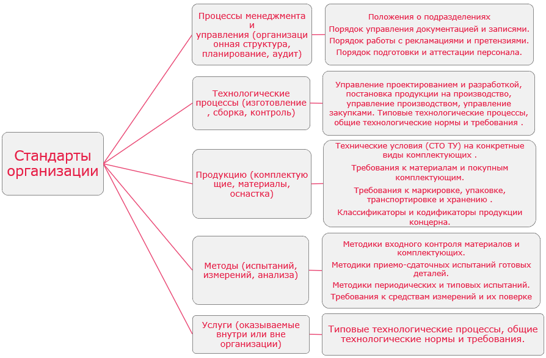

Предлагаемая НТ-идея основывается на стратегии национальной безопасности в области автомобильной промышленности.
В 2024 г. в России было продано 1570 тыс. легковых автомобилей из них только 472135 автомобилей отечественного производства, что составляет 30% от общего числа проданных автомобилей, в 2025 г. эти показатели еще хуже – продано 1326016 автомобилей, из них отечественных 349690, что уже составило 26,4%, наш автопром не в состоянии удовлетворить потребности внутреннего рынка – это и является угрозой национальной безопасности.
Пренебрежение требованиями потребителя внутреннего рынка всегда скажется на потере потребителя на внешнем рынке.
